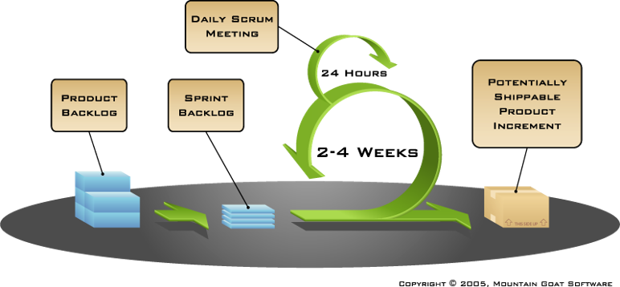

Agile Softwareprozesse
Marcel Lüthi
Departement Mathematik und Informatik

Agile Softwareentwicklung
Agil: Lateinisch für flink, beweglich

- Reaktion auf schwerfällige Prozesse der 80 und 90er Jahre sowie hoher Marktdruck
- Augenmerk auf Flexibilität
- Ziel: Weniger Regeln für gleiche Qualität
Agiles Manifest
Wir erschließen bessere Wege, Software zu entwickeln, indem wir es selbst tun und anderen dabei helfen. Durch diese Tätigkeit haben wir diese Werte zu schätzen gelernt:
- Individuen und Interaktionen mehr als Prozesse und Werkzeuge
- Funktionierende Software mehr als umfassende Dokumentation
- Zusammenarbeit mit dem Kunden mehr als Vertragsverhandlung
- Reagieren auf Veränderung mehr als das Befolgen eines Plans
Das heißt, obwohl wir die Werte auf der rechten Seite wichtig finden, schätzen wir die Werte auf der linken Seite höher ein.
Quelle : http://agilemanifesto.org/iso/de/manifesto.html
Agile Prinzipien (1)
Unsere höchste Priorität ist es, den Kunden durch frühe und kontinuierliche Auslieferung wertvoller Software zufrieden zu stellen.
Quelle: http://agilemanifesto.org/iso/de/principles.html
Agile Prinzipien (2)
Heisse Anforderungsänderungen selbst spät in der Entwicklung willkommen. Agile Prozesse nutzen Veränderungen zum Wettbewerbsvorteil des Kunden.
Quelle: http://agilemanifesto.org/iso/de/principles.html
Agile Prinzipien (3)
Liefere funktionierende Software regelmäßig innerhalb weniger Wochen oder Monate und bevorzuge dabei die kürzere Zeitspanne.
Quelle: http://agilemanifesto.org/iso/de/principles.html
Agile Prinzipien (4)
Fachexperten und Entwickler müssen während des Projektes täglich zusammenarbeiten.
Quelle: http://agilemanifesto.org/iso/de/principles.html
Agile Prinzipien (5)
Errichte Projekte rund um motivierte Individuen. Gib ihnen das Umfeld und die Unterstützung, die sie benötigen und vertraue darauf, dass sie die Aufgabe erledigen.
Quelle: http://agilemanifesto.org/iso/de/principles.html
Agile Prinzipien (6)
Die effizienteste und effektivste Methode, Informationen an und innerhalb eines Entwicklungsteams zu übermitteln, ist im Gespräch von Angesicht zu Angesicht.
Quelle: http://agilemanifesto.org/iso/de/principles.html
Agile Prinzipien (7)
Funktionierende Software ist das wichtigste Fortschrittsmaß.
Quelle: http://agilemanifesto.org/iso/de/principles.html
Agile Prinzipien (8)
Agile Prozesse fördern nachhaltige Entwicklung. Die Auftraggeber, Entwickler und Benutzer sollten ein gleichmäßiges Tempo auf unbegrenzte Zeit halten können.
Quelle: http://agilemanifesto.org/iso/de/principles.html
Agile Prinzipien (9)
Ständiges Augenmerk auf technische Exzellenz und gutes Design fördert Agilität.
Quelle: http://agilemanifesto.org/iso/de/principles.html
Agile Prinzipien (10)
Einfachheit -- die Kunst, die Menge nicht getaner Arbeit zu maximieren -- ist essenziell.
Quelle: http://agilemanifesto.org/iso/de/principles.html
Agile Prinzipien (11)
Die besten Architekturen, Anforderungen und Entwürfe entstehen durch selbstorganisierte Teams.
Quelle: http://agilemanifesto.org/iso/de/principles.html
Agile Prinzipien (12)
In regelmäßigen Abständen reflektiert das Team, wie es effektiver werden kann und passt sein Verhalten entsprechend an.
Quelle: http://agilemanifesto.org/iso/de/principles.html
Beispiel: Scrum
Kritik / Schwächen von Agilen Methoden
- Fokus auf Entwicklung
- Was passiert mit Wartung?
- Wie skaliert man Agile Methoden für grosse Teams?
- Schwierige Vertragsverhandlungen.
- Dogma

-
Empfehlenswertes Buch zum Thema.
Agile's teenage years
The agile movement is in some ways a bit like a teenager: very self-conscious, checking constantly its appearance in a mirror, accepting few criticisms, only interested in being with its peers, rejecting en bloc all wisdom from the past, just because it is from the past, adopting fads and new jargon, at times cocky and arrogant. But I have no doubts that it will mature further, become more open to the outside world, more reflective, and also therefore more effective. [...]
Philippe Kruchten, 2011
https://www.infoq.com/articles/agile-teenage-crisis
Unit Tests
- Wie unterscheiden sich Anforderungsanalyse in Agilen Projekten von traditionellen Prozessen
- Wie schaffen es agile Methoden flexibel auf sich ändernde Anforderungen zu reagieren?
- Weshalb sind Vertragsverhandlungen in Agilen Projekten schwierig?
- Wie unterscheidet sich die Rolle vom Entwickler gegenüber traditionellen Prozessen
- Wieso kann Wartung bei agilen Prozessen schwieriger werden?